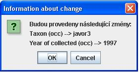
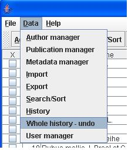
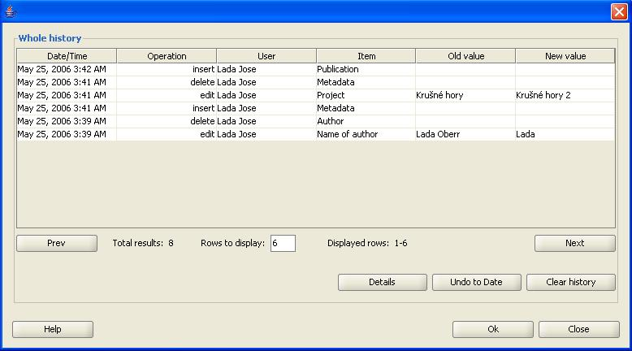

Historie úprav
Zajímavou možností, kterou aplikace uživatelovi nabízí, je sledovat historii zmìn jednotlivých nálezù a celkovou historii zmìn týkající se metadat,
nálezù, autorù a publikací. Základní informace, které jsou pøi sledování zmìn zaznamenávány jsou "èas zmìny", "typ zmìny", "uživatel, který zmìnu provedl", "položka, které se zmìna týká",
"hodnota položky pøed zmìnou" a "hodnota položky po zmìnì".
Nejde však jen o sledování zmìn dat v databázi, ale i o možnost návratu provedených zmìn. Historie tedy nabízí silný nástroj pro zásah do dat v
databázi a proto je zobrazena jen uživatelùm, kteøí mají dostateèná práva (viz. Práva uživatelù).
Exitují dva odlišné typy sledovaní histori:
Historie nálezu - dává uživatelovi možnost sledovat historii vybraného nálezu a vrátit se ke starým hodnotám
Celková historie - dává administrátorovi nástroj pro kontrolu provedených zmìn v datech a možnost zrušení
tìchto zmìn ke konkrétnímu datumu
Historie nálezu
K historii nálezu se dostanete oznaèením konkrétního nálezu a volbou tlaèítka "History" (viz. obr). Jak již bylo zmínìno, tak pøístup k historii je
ošetøen pomocí práv uživatele. K historii nálezu má právo pøistupovat uživatel, který ho vytvoøil. Dále uživale s právem editovat všechny záznamy,
uživatel s administrátorskými právy a uživatel, který má práva na editaci nálezù daného uživatele (viz. Práva uživatelù).

Dialog pro historii nálezu je rozdìlen do tøí èástí. V první èásti "Details of the record" jsou uvedeny základní informace o nálezu.
V druhé èásti "Record created" jsou informace týkající se vložení tohoto nálezu do databáze - kdy a kým byl do databáze vložen. Nejzajímavìjší je
tøetí èást "List of Changes", která zobrazuje informace o zmìnách v tabulce, kde sloupek:
- X slouží pro výbìr jednotlivých zmìn
- Date/Time informuje o dobì, kdy ke zmìnì došlo
- user odpovídá uživatelovi, který zmìnu provedl
- Item informuje o položce, která byla zmìnìna
- Old value obsahuje hodnotu položky pøed zmìnou
- New value obseahuje novou hodnotu položky
Data v tabulce jsou setøízeny od nejmladších zmìn po nejstarší.
Návrat vybraných zmìn
V historii nálezu si mùžete vybrat zmìnu jen konkrétní položky a vrátit se k její staré hodnotì. Proti klasické UNDO operaci, kdy se provedené zmìny v záznamu
vrací od nejmladší po nejstarší v èasovém sledu v jakém k nim došlo, prináší vám tento návrat vybraných zmìn nové možnosti. Napøíklad
provedete opravy položek "Popis oblasti", "Výsledek revize", "Nadmoøská výška" a po tìchto opravách udìláte ještì dalších dvacet zmìnám v záznamu.
U klasického operace UNDO byste museli zrušit postupnì všechny poslední zmìn, abyste mohli vratit starší hodnoty vybraných položek. Pravda je, že byste
mohli zvolit i pracnìjší zpùsob a to znovu editovat nález a pøepsat požadované položky na staré hodnoty, které možná už ani neznáte. Dialog historie nálezu
vám nabízí jednoduchý a rychlý návrat k vybraným hodnotám položek.
Pomocí sloubku "x" vyberte zmìny, které chcete vrátit. Oznaèení èi odznaèení lze provést myší kliknutím v sloubku "x" konkrétního øádku tabulky nebo mùžete
využít tlaèítek SELECT ALL a UNSELECT ALL. Pøi použití tlaèítek NEXT a PREV pro pøechod na následující nebo pøedchozí seznam zmìn nedojde k
odznaèení již oznaèených øádkù. Myslete na to, že když pro danou položku je zaznamenáno více zmìn a vy se rozhodnete vrátit k
té nejstarší zmìnì budou automaticky zrušeny èasovì mladší zmìny. V dialogu se tedy po oznaèení øádku se zmìnou starší položky automaticky oznaèí i øádky s mladšími
zmìnami této položky. Naopak pøi odznaèení mladší zmìny se zruší oznaèení starší zmìn (viz. Logika oznaèování zmìn).
Stisknìte tlaèítko UNDO SELECTED, zobrazí se informace se seznamem zmìn, které budou provedeny. Volbou tlaèítka CANCLE zrušíte operaci. Volbou tlaèítka OK potvrdíte návrat zmìn nálezu, nález bude zmìnìn a z historie bude promazána o tyto
navrácené zmìny.

Logika oznaèování zmìn
Položky v záznamu mùžou být upravovány vícekrát, proto je pøi oznaèování zmìn v dialogu historie nutné ošetøit následující situace:
Pøedpokládejme, že položka TAXON byla n-krát zmìnìna. V dialogu historie existuje n øádkù, které informují o zmìnì položky TAXON. Ve výše
uvedeném obrázku jsou vidìt zmìna 30.4.2006 z hodnoty javor3 na hodnotu javor4 a nejmladší zmìna 2.5.2006 z hodnoty javor4 na hodnotu javor5.
- Uživatel chce se vrátit k situaci, kdy položka TAXON mìla hodnotu javor3. Musí tedy oznaèit øádek se zmìnou z 30.4.2006. Protože exituje ještì
mladší zmìna položky TAXON a to z 2.5.2006 bude oznaèena i tato zmìna. Po zavolání operace UNDO SELECTED bude v položce TAXON daného nálezu nastavena
hodnota javor3 a z historie budou smazány obì informace.
- Uživatel má v dialogu oznaèené zmìny položky TAXON z 30.4.2006 a 2.5.2006 a rozhodl se jen pro návrat zmìny z 2.5.2006 k hodnotì javor4. V této situaci
musí odznaèit zmìnu z 30.4.2006. Pokud by byly oznaèeny i starší zmìny (s datem starším jak 30.4.2006) pložky TAXON, budou odznaèením zmìny z 30.4.2006
automaticky odznaèeny.
- Uživatel má v dialogu oznaèené zmìny položky TAXON z 30.4.2006 a 2.5.2006 a rozhodl se tyto zmìny neprovést. K odznaèení všech zmìn položky TAXON
staèí odznaèit nejmladší zmìnu a automaticky buou odznaèny zmìny starší. Uživatel odznaèením mladší zmìny øekne, že chce zachovat tuto zmìnu položky TAXON.
Celková historie

Dialog celkové historie sledovaných zmìn je pøístupný pouze uživatelovi s právem administrátora. Pokud máte požadovaná práva mùžete tento dialog vyvolat z menu DATA -> WHOLE HISTORY.
